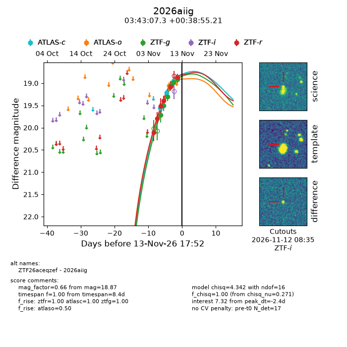
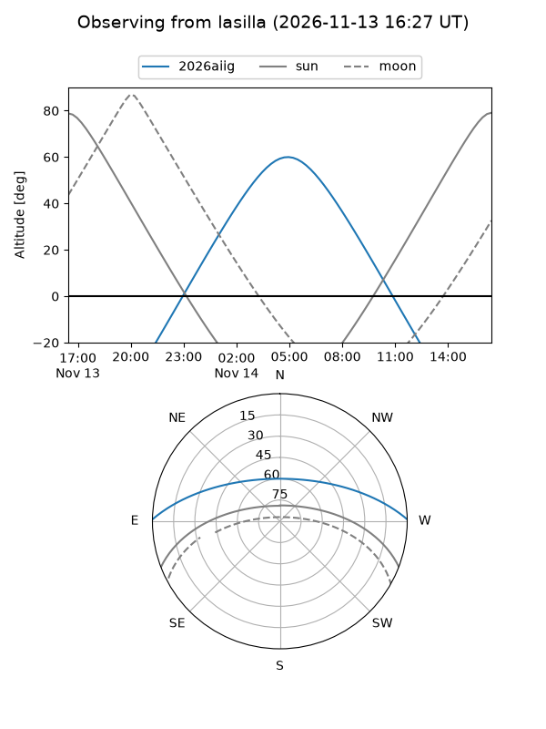
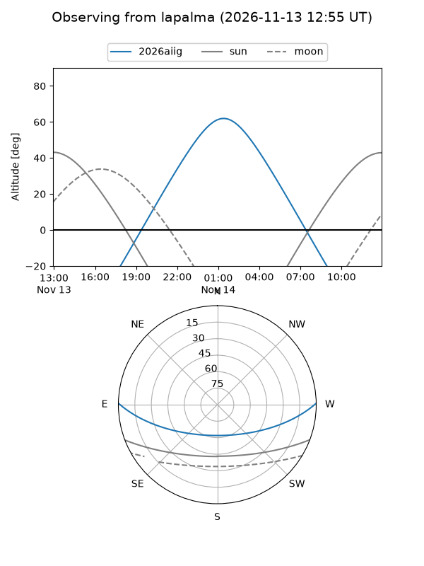
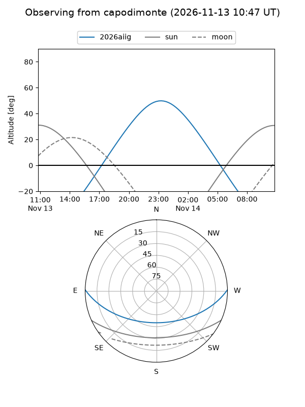
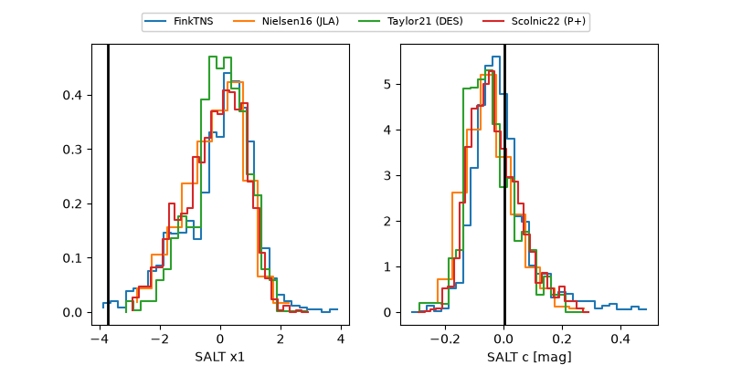

2026aiig
Target 2026aiig at 2026-11-13 17:58
Aliases and brokers:
FINK-ZTF: ztf.fink-portal.org/ZTF26aceqzef
Lasair-ZTF: lasair-ztf.lsst.ac.uk/objects/ZTF26aceqzef
ALeRCE-ZTF: alerce.online/object/ZTF26aceqzef
YSE-PZ: ziggy.ucolick.org/yse/transient_detail/2026aiig
TNS name: wis-tns.org/object/2026aiig
Direct TNS query: direct search
alt names
ZTF26aceqzef (ztf,fink_ztf)
2026aiig (tns,yse)
Coordinates:
equatorial (ra, dec) = 55.7804,+0.64867
equatorial (HMS+DMS) = 03:43:07.30,+00:38:55.21
galactic (l, b) = (186.1320,-40.28042)
Flags:
peak dt: -2.4
Photometry:
last atlasc=18.86, atlaso=19.06, ztfg=18.92, ztfr=18.87
4 atlasc, 1 atlaso, 6 ztfg, 6 ztfr detections
Lightcurve

Visibility



Additional plots
